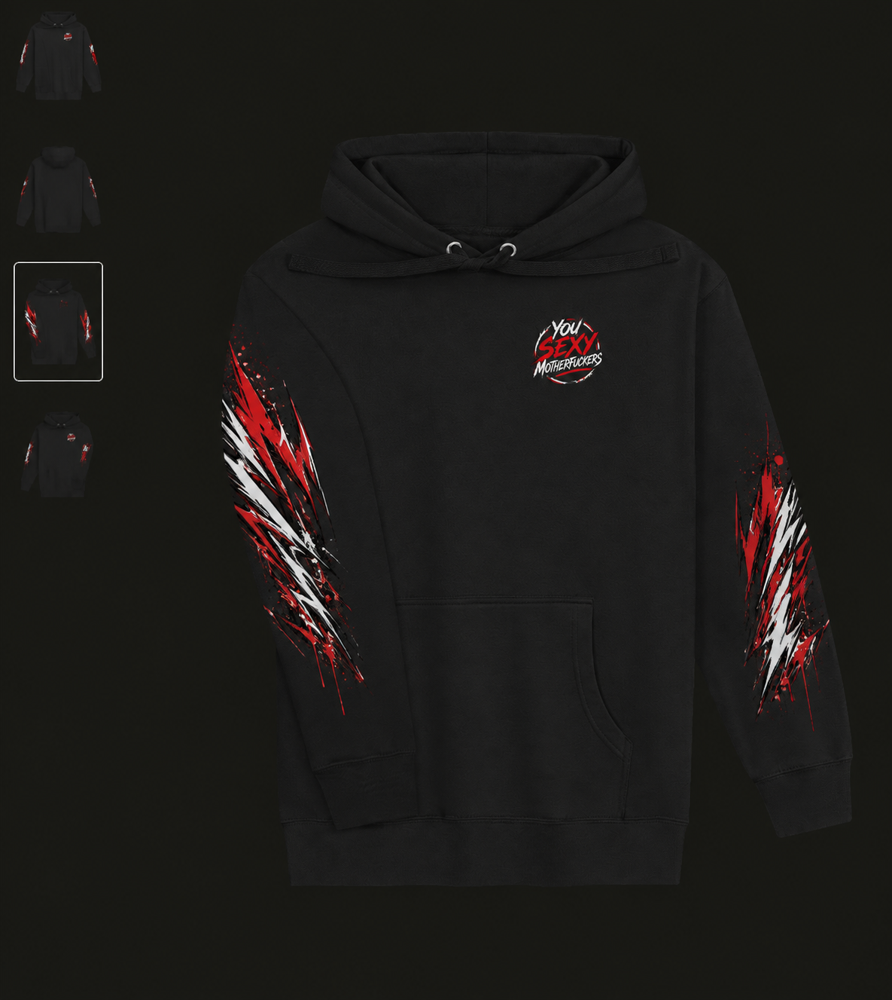
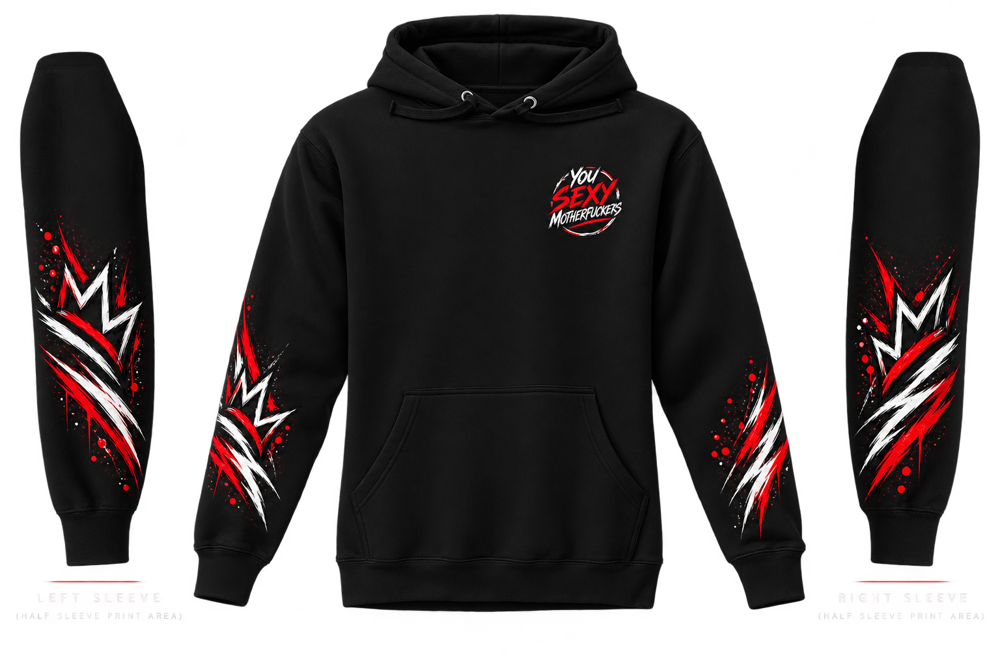

itsFains — Signature Collection
The
original
statement.
Black. White. Red. Signature is the louder side of the brand — built around the phrase and visual identity that started everything.


Signature DNA
Loud by
design.
This is where the full You Sexy Motherfuckers attitude lives: statement graphics, stronger contrast and pieces tied directly to itsFains.
Minimal comes later. Signature stays unapologetic.
Collection 01
Shop Signature.
Wear the
attitude.